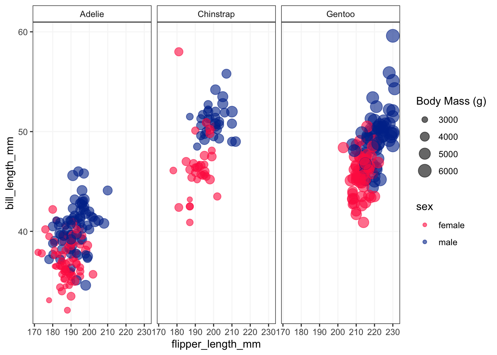

Code
library(tidyverse)
library(palmerpenguins)
# Glimpse the dataset
glimpse(penguins)Rows: 344
Columns: 8
$ species <fct> Adelie, Adelie, Adelie, Adelie, Adelie, Adelie, Adel…
$ island <fct> Torgersen, Torgersen, Torgersen, Torgersen, Torgerse…
$ bill_length_mm <dbl> 39.1, 39.5, 40.3, NA, 36.7, 39.3, 38.9, 39.2, 34.1, …
$ bill_depth_mm <dbl> 18.7, 17.4, 18.0, NA, 19.3, 20.6, 17.8, 19.6, 18.1, …
$ flipper_length_mm <int> 181, 186, 195, NA, 193, 190, 181, 195, 193, 190, 186…
$ body_mass_g <int> 3750, 3800, 3250, NA, 3450, 3650, 3625, 4675, 3475, …
$ sex <fct> male, female, female, NA, female, male, female, male…
$ year <int> 2007, 2007, 2007, 2007, 2007, 2007, 2007, 2007, 2007…Code
# Basic visualization
penguins %>%
filter(!is.na(sex)) %>%
ggplot(aes(flipper_length_mm, bill_length_mm, color = sex, size = body_mass_g)) +
geom_point(alpha = 0.6) +
scale_color_manual(values=c("#FF2B4F","#003399")) +
labs(size = "Body Mass (g)") + # Rename the legend for body_mass_g
facet_wrap(~species) +
theme_bw() +
theme(strip.background = element_rect(fill = NA),
panel.grid.minor = element_blank(),
panel.grid.major = element_line(color="grey97"))